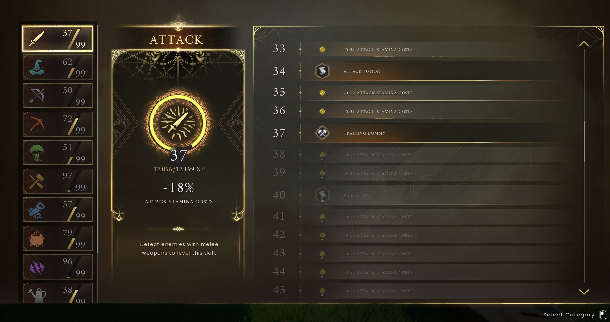

Skill guide
Learn by doing, choose your next unlock and understand what your levels mean.
On this page
Skill level is not equipment power
XP means experience points. Performing relevant activities advances skills and unlocks benefits. Open K and select a skill to inspect its milestones. A high skill level is not the same thing as a high equipment power level: keep your tools and armour appropriate for what you are attempting.


Choose a useful skill to work on
| Skill | What to focus on | Why it helps |
|---|---|---|
| Attack | Practise melee combat. | Close-range fighting and related unlocks. |
| Ranged | Use bows or other ranged equipment. | Fight from a distance; plan ammunition. |
| Magic | Use magical combat equipment. | A different combat style with rune needs. |
| Mining | Gather stone and ore with a suitable pickaxe. | Supplies for equipment and construction. |
| Woodcutting | Chop suitable trees with an axe. | Fuel, timber and wood-based materials. |
| Artisan | Make useful equipment and processed items. | Support the team’s crafting needs. |
| Construction | Build useful structures and furnishings. | Create a functional shared camp. |
| Cooking | Prepare food for expeditions. | Keep the team supplied. |
| Runecrafting | Prepare runes for the spells you use. | Support sorcery and utility. |
| Farming | Develop a regular crop-supply routine. | Help sustain cooking and crafting. |
| Fishing | Learn available catches and fishing tools. | Broaden your food supply. |
| Agility | Practise the game’s traversal activities. | Movement-focused progression. |
A beginner-friendly training plan
- Pick a real need: food, a better tool or building materials.
- Open the relevant skill and read the next milestone. Set one achievable goal.
- Gather or craft enough for that goal rather than carrying everything you find.
- Return to camp, use what you made and check the next unlock.
- Tell the group what you are working on so everyone is not competing for the same supplies.
Turn an unlock into something useful
A newly unlocked spell may still need assigning and runes. Read the magic and spellbook guide before assuming it is ready to cast. Passive benefits and active spells behave differently: inspect the milestone text to see which you gained.
Prayer and Hunter: these are announced additions in the roadmap. Do not plan a current training session around unreleased skills.
Choose a practical skill reference
XP and unlock references
Open the level 1–99 XP table and target calculator. Compare the XP from a recipe with the XP still needed for your next unlock.
- Mining: ore locations, tools and every listed unlock
- Woodcutting: axe tiers and skill milestones
- Fishing: XP per catch, bait and unlocks
- Agility: course and movement unlock levels
- Magic: elemental unlocks and spell milestones
- Artisan: recipes, XP and workshop production
- Construction: building unlock levels
Further reading
For exact requirements, detailed walkthroughs and more depth, visit the topic pages below.
Wiki adaptations and data: RuneScape: Dragonwilds Wiki contributors, CC BY-NC-SA 3.0. See credits for source dates.